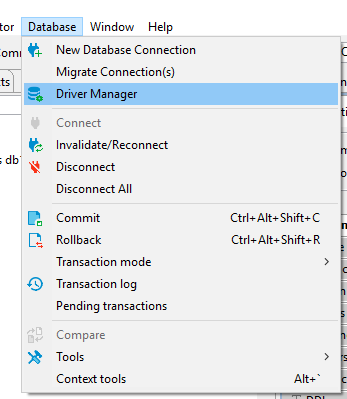
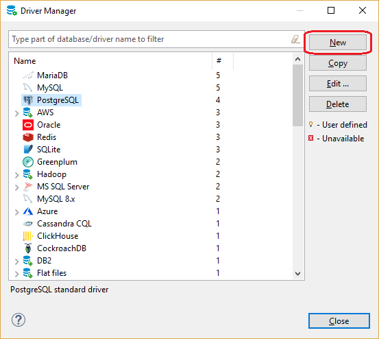
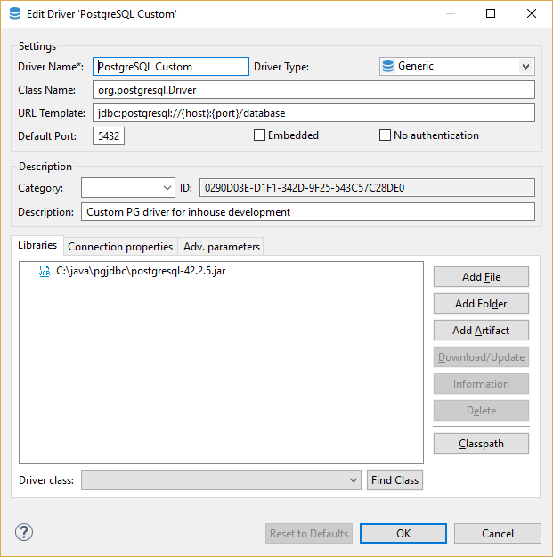
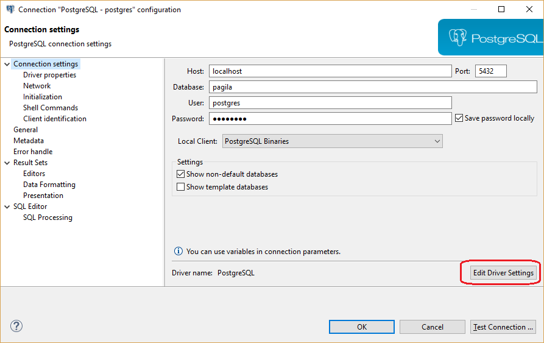
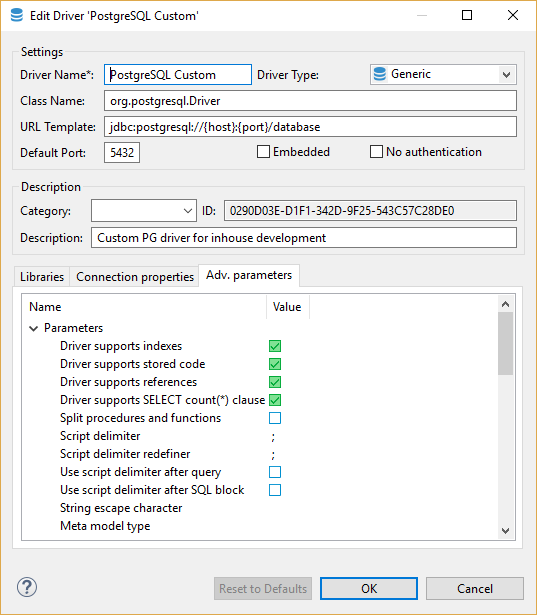

You can use pre-configured database driver or create new driver.
DBeaver has a lot of pre-configured driver including SQL, NoSQL, key-value databases, graph databases, search engines, etc. But sometimes you need to connect to a database which was not configured in DBeaver yet.
All you need is JDBC driver of your database. The rest is easy.
Obtaining JDBC driver
JDBC driver is a program (in Java) which can connect and operate with some local or remote database server. It usually provides all needed functionality to cover 100% of database functionality. Usually, JDBC driver are provided by database vendors to let customers ability to work with their databases.
JDBC driver consists of one or multiple jar files. Jar file is a library which contains program code and some other files.
You need to download driver's jar files before adding them in DBeaver. Sometimes jar files are included in database server distribution - in that case you need to refer your database documentation or ask your DBA.
Adding driver configuration in DBeaver
Open driver manager dialog
You can open driver manager from main menu:

or from Database Navigator drop-down menu.

Add new driver
Just click the button New and create a new driver. On the driver edit dialog you need to enter all required information:
Main parameters

| Parameter | Description |
|---|---|
| Driver Name | Name of your driver. It can be any name you like |
| Driver Type | Driver provider. In 99% cases you will need Generic driver (JDBC provider) |
| Class Name | JDBC driver class name. You can get it from the documentation or find it in jar files (see "Find Class" button description) |
| URL Template | Template of driver URL. You can leave it empty. But in this case you will be ready to set JDBC URL for each your connection. It is better to define a valid template, this will greatly simplify connections creation. See "URL Templates" for the detailed description |
| Default Port | Default database port. You can get it from documentation or leave it empty |
| Embedded | Enable it for server-less databases. This flag affects a few config options related to network/connections management |
| No Authentication | This means that driver doesn't require authentication (no user/password fields will be shown) |
| Category | Driver category, deprecated |
| ID | Driver unique ID, ignore it |
| Description | Driver description, it is shown on some dialogs/wizards as a hint |
Libraries
This is the list of jar files, binary libraries (dll or so) and any other files required by driver. In most cases you need only jar files.
Click "Add File" to add single jar file, "Add Folder" to add folder with Java classes/resources and "Add Artifact" to add Maven artifact (see below).
After you add jar files you will be able to find all JDBC driver classes which present in these jars. Just click on the "Find Class" button and DBeaver will show all of them. In most cases there is just one driver class in the driver. If there are many of them then you need to refer to the driver's documentation.
Maven artifacts
DBeaver can download driver jars directly from Maven repository (it is a global public repository of Java libraries, usually open-source). If your database driver is published on some public repository you can use this feature. Maven artifacts are better than plain jar files because you can see all existing driver versions and can change driver version in runtime without any driver properties reconfiguration.
Saving driver, adding connection
After you finished configuring your driver just press Ok button.
Now you can [[create connection]].
If you need to change some driver properties later you can access them directly from connection properties dialog:

URL Templates
JDBC drivers use URLs to identify remote servers - strings similar to classic web URLs.
Usually, URL has form jdbc:vendor:host:port/database, for example `jdbc:postgresql:localhost:5432/postgres'.
It is not very convenient to edit such long and unobvious string.
DBeaver can construct this URL from connection parameters (like host, port, etc).
For example above the URL template is: jdbc:postgresql://{host}:{port}/{database}
Host, port and database are parameters which you will need to enter on the connection configuration page.
Supported URL variables:
| Parameter | Description |
|---|---|
| {host} | Database server host name |
| {port} | Database server port number |
| {database} | Target database name |
| {server} | Target server name (rarely used) |
| {folder} | Folder path (on the local file system). Used for embedded drivers |
| {file} | File path (on the local file system). Used for embedded drivers |
Advanced settings
For most driver you don't need to change any advanced properties. But in some cases you can use this as a driver tuning, e.g. for better performance or for structure fixing.

Main parameters
| Parameter | Description |
|---|---|
| Driver supports indexes | Driver supports table indexes |
| Driver supports stored code | Whether this driver supports stored code (procedures, functions, packages, etc) |
| Driver supports references | Driver supports table references (foreign keys) |
| Driver supports SELECT count(*) clause | Driver supports SELECT count(*) clause |
| Split procedures and functions | Show procedures and functions in different folders |
| Script delimiter | Literal for SQL queries separation in scripts |
| Script delimiter redefiner | SQL clause which redefines script delimiter value |
| Use script delimiter after query | Keep SQL script delimiter after each SQL query |
| Use script delimiter after SQL block | Keep SQL script delimiter after SQL script blocks (BEGIN/END) |
| String escape character | Character used to escape special symbols in strings |
| Meta model type | Type of metadata reading model - standard or indexed |
| All Objects Pattern | SQL pattern for all metadata objects |
| Omit catalog(s) | Do not read and use catalog (aka database) information |
| Omit single catalog | Hide catalog (database) if there is only one catalog on server |
| Omit single schema | Hide schema if there is only one schema on server |
| Omit type cache | Do not use data types provided by driver |
| Shutdown parameter | Database shutdown URL parameter |
| Create database parameter | Database create URL parameter |
| Driver supports multiple results | Driver supports multiple results for a single query |
| Driver supports result set limit | Driver supports multiple result set limit (max rows) |
| Driver supports structure cache | Driver supports structure cache reading. Enables schema columns, keys, etc |
| Driver supports TRUNCATE operation | Driver supports TRUNCATE command. It is much faster than DELETE without criteria |
Queries (Custom driver queries)
| Parameter | Description |
|---|---|
| Get active database | Query to obtain active database name |
| Set active database | Query to change active database |
| Shutdown database | Query to shutdown active database connection. Used for some embedded databases |
| PING query | Query to check connection state |
| Dual table name | Name of dummy 'DUAL' table which is used for expressions evaluation |
| Active object type | Type of selectable object (schema, catalog) |
| Driver supports results scrolling | Driver supports resultset scrolling |
| Quote reserved words | Quote columns/table names if they conflicts with reserved SQL keywords |
| Escape LIKE masks in search queries | Use to access JDBC metadata API. Enabled by default but should be disabled for some (broken) driverss |
DDL (DDL generation options)
| Parameter | Description |
|---|---|
| Drop column short syntax | Use 'ALTER TABLE DROP column-name' instead of standard syntax |
| Use legacy SQL dialect for DDL | Use legacy SQL dialect for DDL |
Formatting (SQL values formats)
| Parameter | Description |
|---|---|
| Timestamp format | Format pattern for timestamp columns |
| Date format | Format pattern for date columns |
| Time format | Format pattern for time columns |
Summary
If you have configured some driver, it works good and you think that it makes sense to have this driver configuration in standard DBeaver, please send your configuration to us. Just create a feature request issue on GitHub and copy/paste driver description to the ticket (in any suitable form).
Thank you :)